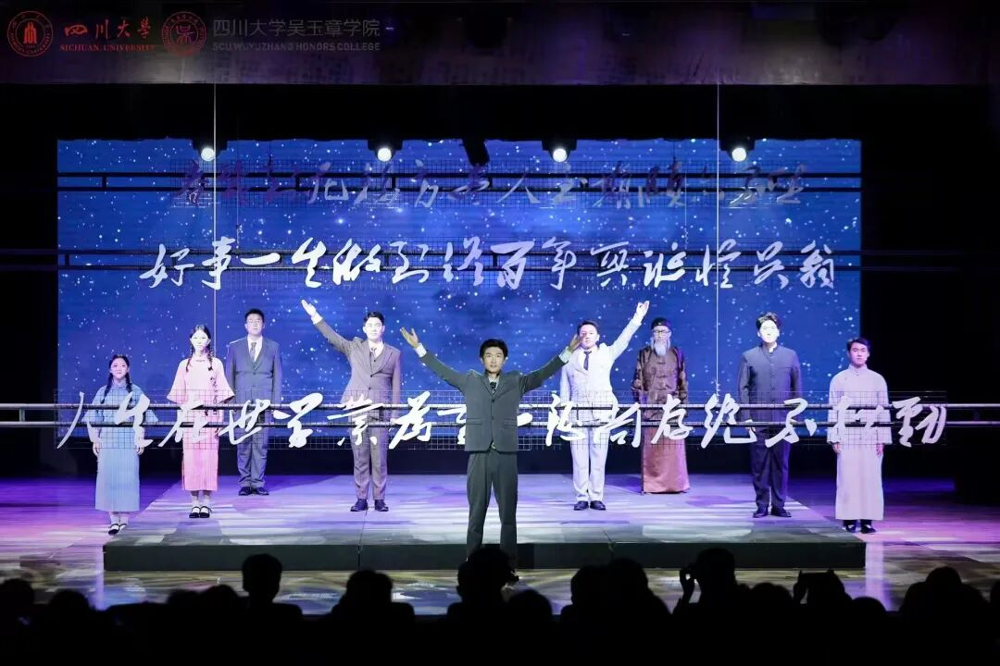
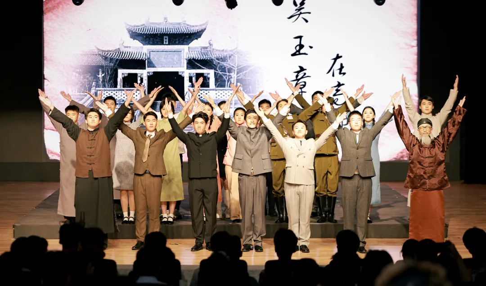
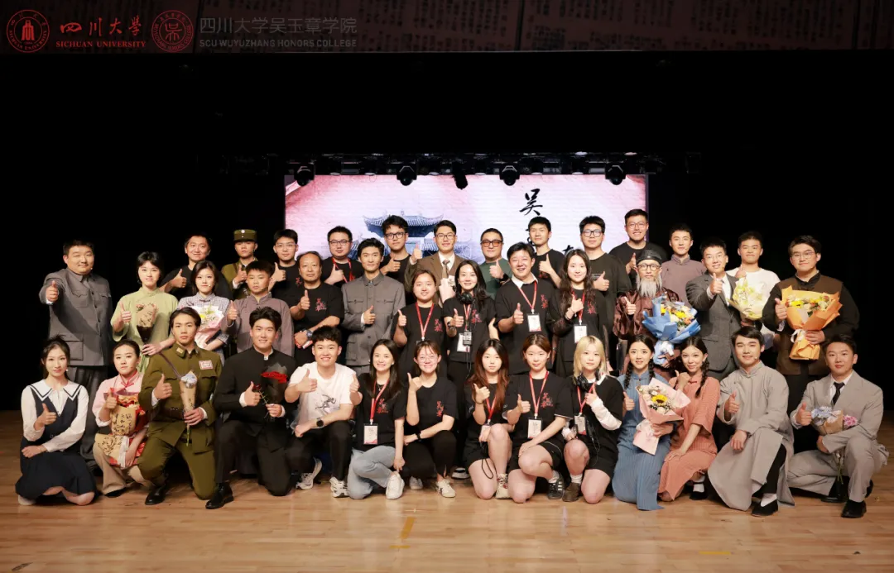
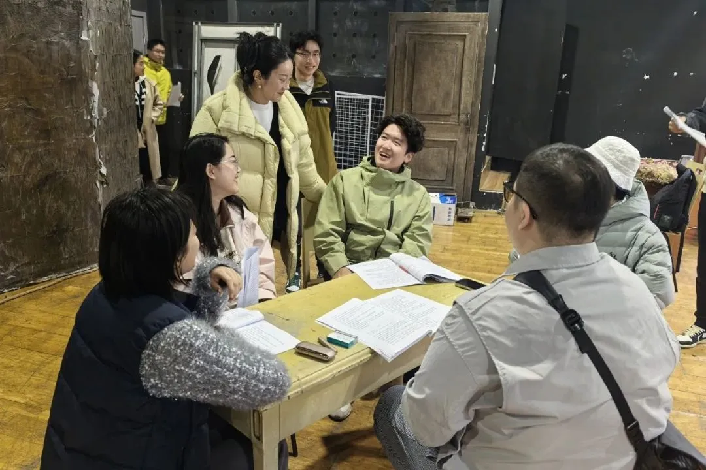

四川大学吴玉章学院 出品 · 三场公演圆满落幕
一部严肃庄重的舞台正剧，再现著名教育家、革命家吴玉章先生在成都高等师范学校任教时期的光辉岁月。
19:00 · 江安校区 艺术学院教学实验剧场
主办单位：四川大学 · 承办单位：教务处、党委学生工作部（处）、吴玉章学院
19:00 · 江安校区 艺术学院教学实验剧场
主办单位：四川大学 · 承办单位：教务处、党委学生工作部（处）、吴玉章学院
19:00 · 江安校区 艺术学院教学实验剧场
主办单位：四川大学 · 承办单位：教务处、党委学生工作部（处）、吴玉章学院
民为贵，社稷次之，君为轻。我在高师也一样，学生为贵，学校次之，校长为轻。
—— 吴玉章 · 剧中台词
有一个人，以教育为火种，点燃一个时代。
—— 讲述者 · 序幕

5月16日，四川大学吴玉章学院组织策划、在校学生主演的原创舞台剧《吴玉章在高师》在江安校区艺术学院教学实验剧场进行首场公演。副校长、吴玉章学院院长游劲松和校党委副书记刘晓虎，学校相关单位负责人，兄弟院校荣誉学院以及全校师生代表观看了演出。
全剧以八幕剧情串联起吴玉章先生整顿校风、引进新学、推动中西学术交融等教育改革实践，将美育教育与思政教育深度融合，为师生呈现一堂跨越时空的“思政大课”。
阅读原文 →


这台剧不是简单的模仿，而是让文物走出展柜，让精神直抵人心。
吕远红 · 吴玉章陈列馆馆长
深入角色后，方知变革的复杂性，更敬佩教育革命家吴玉章先生“破与立”的智慧。
韩嘉祥 · 饰 吴玉章
吴玉章先生不拘一格选拔人才、倡导“学术自由”的高瞻远瞩，让我真切体会到吴院今日“一式三制三化”培养模式的深远意义。
韩嘉仪 · 饰 海川 · 2023届吴院学子
《哭吾妻丙莲》一幕中，吴先生对妻子的深情独白让我潸然泪下，让我看到革命者“舍小家、为大家”的崇高情怀。
姚释堃 · 2023级工程力学（拔尖计划）
以上内容摘编自“四川大学e教务”公众号 2025 年 5 月 20 日文章《首场公演！这场“沉浸式”大课，触动人心！》，图片来自原文。